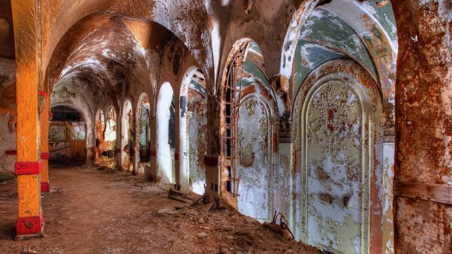
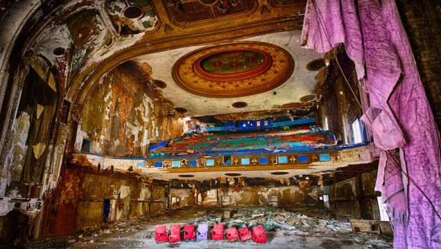

S. WAGNER
Some cool looking abandoned theaters
Eastown Theatre, Detroit (1930-1990s) courtesy of Bob Julius
 The Paramount Theatre in Newark, NJ – Opened on October 11, 1886 as H.C. Miner’s Newark Theatre. It was originally a vaudeville house managed by Hyde & Behman Amusement Co., a Brooklyn based theater Management Company. Photo courtesy of afterthefinalcuratin.net

The RKO Keith’s Theatre, originally called the Keith-Albee Theatre, opened Christmas Day, 1928 at 1:00 PM. Located in Flushing, Queens, it was designed by Thomas W. Lamb. Photo courtesy of afterthefinalcurtain.net